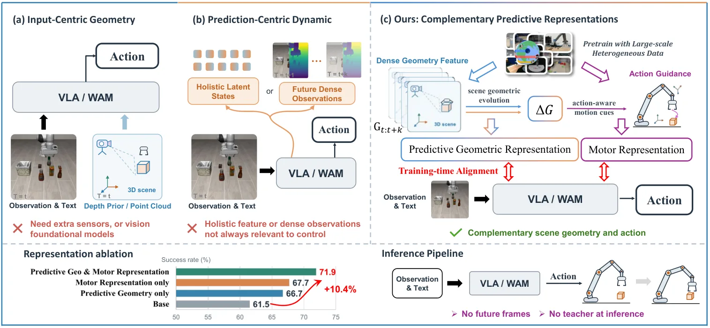
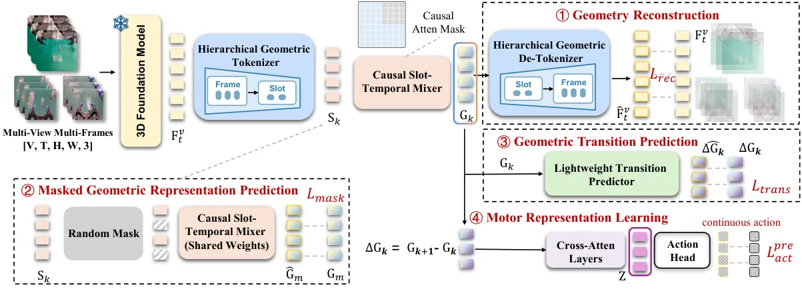
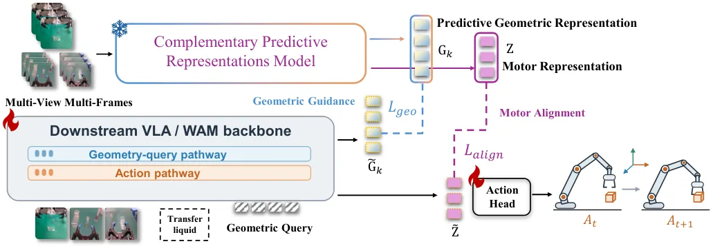
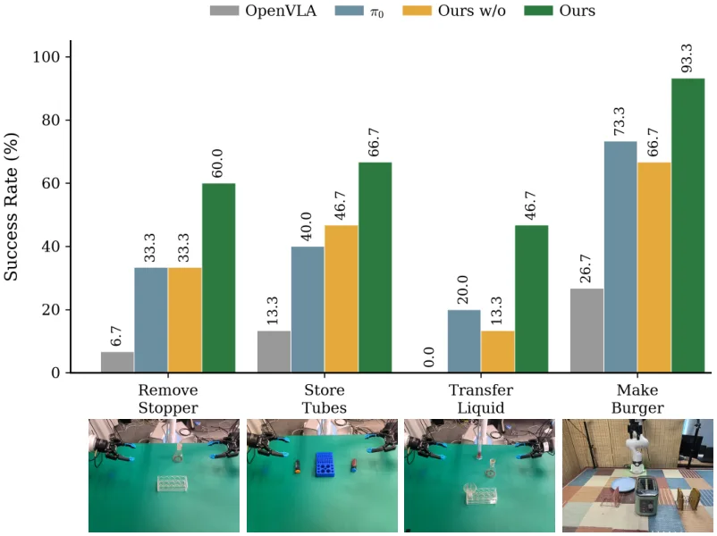
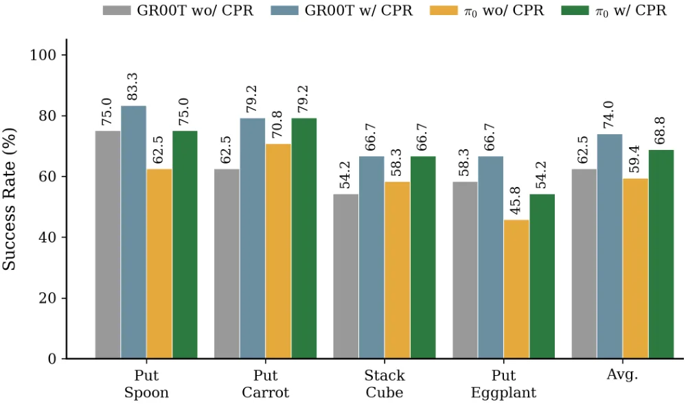

CPR：从预测几何到动作——为具身操作学习互补的预测表征
From Predictive Geometry to Action: Learning Complementary Predictive Representations for Embodied Manipulation
核心是“一个表征只干一件事”：预测几何表征要完整保留场景结构及其演化（重建 + 掩码预测 + 转移预测），运动表征只从几何转移里抽取与动作相关的成分（用动作块做 L1 监督）。两者在后训练阶段走不同通路进入策略：geometry queries 从当前输入推断预测几何，动作通路的中间特征对齐运动表征；推理时策略只用当前观测，表征模型与未来帧都不需要。LIBERO 平均 96.6→98.6，LIBERO-Plus 75.0→81.7，WidowX 61.5→71.9（+10.4），GR00T 62.5→74.0，π0 59.4→68.8，FastWAM 97.6→98.5；去掉任一表征都会掉，合成一个统一表征也不如分开（67.7 对 71.9）。
作者、单位与技术谱系 · Research context
作者与单位
研究脉络
- VGGT（Wang et al., 2025）方法基座关系：作为冻结的 3D 基础编码器提供稠密几何特征，整篇论文的预测几何表征都建立在其特征空间上，重建目标也是回归它的特征。[论文第 3.1 节与附录 C.1]
- JEPA / V-JEPA 2 的潜空间预测路线方法上游关系：本文“在潜空间预测而非重建像素”的取向与其一致：预测目标是冻结编码器的特征，动作监督作用在潜空间转移上。[论文第 1 节与参考文献（Assran et al. 2023/2025）]
- 输入中心与预测中心两类几何增强 VLA问题上游关系：GeoVLA、SpatialVLA、3D-CAVLA、FALCON 代表输入中心；4D-WAM、ELAN4D、QDepth-VLA、WoG 代表预测中心。本文的贡献是把两者的缺口明确成“表征角色未分工”，并给出分工方案。[论文第 1 节、第 4 节与表 1–2]
合作网络
- 北京航空航天大学与上海人工智能实验室Beihang University（Xiaoxu Xu, Weixin Li） → Shanghai Artificial Intelligence Laboratory（其余七位作者）关系：共同署名/联合培养[arXiv v1 TeX 源作者块]
- VGGT 到 CPR 表征模型VGGT（Wang et al., 2025） → CPR 预测几何编码器关系：技术依赖（冻结特征源）[论文第 3.1 节与附录 C.1]
- CPR 官方代码论文 → github.com/xuxiaoxxxx/CPR关系：官方代码[论文摘要中的代码链接]
作者、单位、两位通讯作者均为 arXiv v1 TeX 源中的事实；与 VGGT、JEPA、两类几何增强 VLA 的关系基于正文引用与自述，属有来源的解读。论文未公开导师关系与项目编号，未做推断。
方法本质拆解 · What actually changed
是不是微调？
是两阶段训练，不是简单微调。第一阶段在异构机器人加 ego 与通用视频数据上从零训练表征模型，VGGT 编码器全程冻结，32 张 H200、batch 512、120K 步、四阶段递进；第二阶段冻结整个表征模型，只后训练下游 VLA（默认从 Qwen3-VL-4B-Instruct 初始化），把 G 与 Z 当作特权监督目标。
有没有额外约束？
输入侧需要多视角视频片段（最多 3 视角，518×518）与时间对齐的动作块，动作只用于第四阶段的运动表征与后续后训练。新增约束包括：重建目标对齐冻结 VGGT 特征（stop-gradient）、掩码预测的 SmoothL1 加方差-协方差正则（λ_vc=0.06）、转移预测的残差 SmoothL1，以及后训练中对 geometry queries 的监督和动作中间特征的对齐损失（λ_align 余弦衰减）。
推理/后端到底做了什么？
推理时什么都不额外做：表征模型、VGGT、未来观测全部不参与，策略只用标准当前观测（图像、语言、本体状态）前向出动作块。geometry queries 与运动对齐只改变训练时的特征分布，部署开销与基线 VLA 相同。
方法本质是什么？
本质是把“预测几何”拆成两个用途不同的潜变量：G 保留场景结构及其演化（靠重建与转移预测塑形），Z 只保留几何变化中与动作相关的成分（靠动作监督抽取），再通过两条独立通路把它们的影响注入策略。它改变的是训练信号的组织方式，不是策略结构；没有做的是显式 3D 重建、没有在推理时用几何输入、也没有建模接触力。
输入多视角视频片段与动作块 → 用冻结 VGGT 特征训练预测几何表征，并从几何转移中抽出运动表征 → 后训练时分别以 geometry query 监督与中间特征对齐注入策略 → 推理零额外输入即可获得更好的操作成功率。

结论与问题Conclusion & Motivation
核心结论
CPR 的核心主张是：预测几何与动作生成对表征的偏好不同，应该用两个表征分别承担。预测几何表征要“完整、连贯”，因此用几何重建、掩码表征预测、几何转移预测三个目标把它压成紧凑但结构完整的时序状态；运动表征要“只留有助控制的成分”，因此从几何转移出发、用动作块做监督抽出。后训练时两者走不同通路：geometry queries 负责从当前输入推断预测几何，动作通路的中间特征对齐运动表征。推理阶段完全不需要未来观测与表征模型。结果是 LIBERO 平均 98.6（基线 96.6）、LIBERO-Plus 81.7（75.0）、WidowX 71.9（61.5，+10.4 个点），且在 GR00T 与 π0 上分别提升 11.5 与 9.4 个点。
动机与问题
把几何塞进策略有两条现成路线，但都不回答“该怎么表征”。输入中心方法（GeoVLA、SpatialVLA、3D-CAVLA、FALCON）把深度、点云、3D 坐标或预训练几何特征作为额外输入，几何只是描述“当前看到了什么”，还可能依赖额外传感器或几何估计管线。预测中心方法（4D-WAM、ELAN4D、QDepth-VLA、WoG）用未来 RGB-D、未来几何状态或其他世界预测目标做监督，但目标是稠密观测或整体潜状态，要求表征同时保留大量与控制无关的细节。作者的判断是：保留完整场景结构（预测几何需要）与强调动作相关变化（控制需要）是两种不同的偏好，硬塞进同一个表征会互相牵制。
方法Method
方法总览
预训练分四步递进。第一步层次化几何 token 化：冻结 VGGT 对每帧每视角独立提特征（518×518，最多 3 视角，不足补零并 mask），可学习几何 query 先跨视角压缩成帧级状态 H_t，再按“首帧保留 + 每 4 帧压成一个时间槽”的规则得到 K 个时间槽 S。第二步用因果 Slot-Temporal Mixer 得到预测几何表征 G，每个槽只 attend 到当前及之前的槽。第三步三个目标共同塑形：几何重建 L_rec（SmoothL1 回归 VGGT 特征，stop-gradient）、掩码表征预测 L_mask（随机遮槽、用上下文分支预测目标分支输出，并加方差-协方差正则）、几何转移预测 L_trans（预测相邻槽的潜空间差 ΔG）。第四步运动表征：可学习 motor queries 对 ΔG 做交叉注意力得到 Z，经动作头预测动作块并 L1 监督。后训练冻结整个表征模型，用它生成 G 与 Z 两个特权目标。
关键技术细节
几个决定性的细节。其一，重建目标是回归冻结 VGGT 的特征而不是原始观测，作者的理由是这样才能保住“几何信息”而不是外观纹理，并且用 stop-gradient 防止表征把目标带偏。其二，时间压缩是“首帧锚 + 每 4 帧一槽”，K = 1 + floor((T−1)/4)，这样既保留初始观测又控制 token 预算；槽内用可学习 temporal queries 做交叉注意力，不同槽之间在该阶段互相不可见。其三，L_mask 里的方差-协方差正则（λ_vc=0.06）是防塌缩的关键：方差项维持特征维度离散度，协方差项抑制维度间冗余。其四，转移预测只回归残差 ΔG 而不是重建完整状态，把容量集中在“怎么变”上。其五，后训练时对 λ_align 用 cosine 衰减，随着训练推进逐步放松潜空间对齐，让策略在保留运动信息的同时回归自身动作目标。

实验Experiments
实验设置
预训练语料是异构混合：OXE、RoboTwin、LIBERO（排除 LIBERO-90）等机器人数据，加上 ego 数据与若干通用视频数据，按表 15 的比例混合；预训练在 32 张 H200、全局 batch 512、学习率 1e-5、共 120K 步，分四阶段递进（重建 → 掩码 → 转移 → 动作），λ_mask=0.5、λ_trans=0.5。下游策略默认 QwenOFT（Qwen3-VL-4B-Instruct 初始化），保留原生动作目标，前 5,000 步线性 warm-up。评测覆盖 LIBERO（Object/Spatial/Goal/Long 四套件）、LIBERO-Plus 零样本分布偏移、SimplerEnv 的 WidowX 四任务，以及四个真机任务（三个双臂：拔塞子、装管入盒、向锥形瓶转移液体；一个单臂：做汉堡）。对照含 OpenVLA-OFT、π0、GeoVLA、3D-CAVLA、4D-WAM、ELAN4D、SpatialVLA、FALCON、QDepth-VLA、WoG。指标为任务成功率。
实验数字与比较
LIBERO（表 1）：平均 98.6 对基线 96.6（+2.0），Object 100.0、Spatial 99.0、Goal 98.2、Long 97.0；4D-WAM 98.6、3D-CAVLA 98.1、GeoVLA 97.7、π0 94.2。LIBERO-Plus 零样本：81.7 对 75.0（+6.7），ELAN4D 78.2、4D-WAM 71.0、OpenVLA-OFT 69.6、π0 53.6。WidowX（表 2）：平均 71.9 对基线 61.5（+10.4），Put Spoon 70.8 对 58.3、Put Carrot 70.8 对 54.2、Stack Cube 70.8 对 54.2，Put Eggplant 50.0 与基线持平；QDepth-VLA 68.5、WoG 63.5、FALCON 56.3。跨架构：GR00T 62.5→74.0，π0 59.4→68.8（+9.4）；FastWAM（表 3）97.6→98.5。消融（表 4）：只加预测几何 66.7（+5.2），只加运动表征 67.7（+6.2），两者合用 71.9。表征组织（表 5）：统一表征 67.7，互补 71.9。
消融/失败边界
两组消融指向同一结论：两种表征各自有效但不可互相替代。表 4 中 PGR 单独 +5.2、MR 单独 +6.2，合用 +10.4，说明二者提供的是互补而非重叠的信息；表 5 里把运动分支去掉、让预测几何表征同时被动作目标监督并与策略中间特征对齐（统一表征），只能到 67.7，比互补设计低 4.2 个点。表征探针（图 6，LIBERO-90 零样本）给出机制侧证据：运动表征让更多样本落在低动作误差区，预测几何表征在深度探针上更保真，统一表征则在两者之间折中。失败边界有三条：其一，Put Eggplant 上没有任何提升（50.0 对 50.0），增益在四个任务上分布不均；其二，整个框架依赖 VGGT 特征的质量与“多视角、帧序列”的输入条件，单视角或帧率过低的场景没有验证；其三，预训练用了动作标注数据，若目标机器人动作空间与预训练数据差异大，运动表征的可迁移性未知。
局限与迁移Limitations & Transfer
局限与待核验
作者在附录 D 只承认一个方向性局限：当前框架只处理视觉几何及其时间演化，未来要把触觉纳入同一表征学习框架，以覆盖接触状态、交互力与遮挡下的细粒度构型。我们的待核验项：一是真机结果只有图 4 的柱状图，正文没有任何逐任务数值，四个任务的具体成功率与置信区间待补；二是“10.4 个百分点”是 SimplerEnv 的 WidowX 仿真结果，不是真机，对外表述时要写清；三是预训练成本（32 张 H200、120K 步、混合语料）没有给总 GPU 小时，复现难度未知；四是代码仓库地址已给出但未核验是否放出预训练权重；五是 LIBERO 上 98.6 已接近饱和（Object 100.0），后续提升空间主要在分布偏移与长程任务，本文对 Long 套件的增益（97.0 对 93.6）相对有限。
与你研究路线的关系
最值得借用的是“按用途拆表征”的方法论：同一个几何底座可以同时产出“结构完整”和“动作相关”两种监督，下游各走各的通路，而不是让一个特征承担所有角色——这与你把状态估计拆成“几何一致”和“不确定性/可靠性”两条线的做法同构。第二个可迁移点是“未来观测只作特权监督”：训练时用未来帧构造目标、推理时只用当前输入，这个模式可以套到在线标定或退化检测上——用离线高质量数据构造监督，部署时不给系统增加任何输入。第三个是诊断工具：用零样本探针（动作误差分布、深度探针）判断表征里到底编码了什么，比只看下游成功率更能解释增益来源。下一步实验建议：在你的多传感器数据上先做一个最小版——用冻结 VGGT 提特征、只训练预测几何分支与一个轻量动作头，验证“几何转移是否真的比当前几何更有信息量”；同时把探针实验搬过来，检查表征有没有把时间信息压掉。







